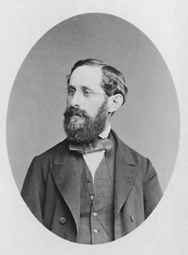

1821–1881
German
Analysis, topology
Heinrich Eduard Heine was born in Berlin and studied at the universities of Berlin and Gottingen, where he attended Dirichlet's lectures. He completed his doctorate in 1842 and, after a period as a Privatdozent in Bonn, became professor at the University of Halle in 1856, a position he held until his death.
Heine's most important contribution to analysis was his 1872 proof that a continuous function on a closed bounded interval $[a,b]$ is uniformly continuous. The proof exploited what we now call the Heine–Borel property: every open cover of $[a,b]$ has a finite subcover. This result, which Heine established using ideas from Dirichlet's lectures, became a cornerstone of real analysis and later of general topology.
The Heine–Borel theorem — that closed and bounded subsets of $\mathbb{R}^n$ are compact — bears his name alongside Emile Borel, who proved the covering property independently in 1895. The theorem characterises compactness in finite-dimensional Euclidean space and is essential throughout analysis: it powers the extreme value theorem, uniform continuity on compact sets, and the equivalence of norms in finite dimensions. Heine also contributed to the theory of special functions, particularly Legendre functions and spherical harmonics, and his textbook on these topics was influential in mathematical physics.
| Phase | Page | Referenced for |
|---|---|---|
| Phase 3 | Integrability and Properties | Heine's theorem: continuity on $[a,b]$ implies uniform continuity (1872) |
| Phase 3 | Integrability and Properties | Proof uses the Heine–Borel property |
| Phase 8 | Poincare–Bendixson | Heine–Borel compactness argument |
| Phase 9 | Compactness | Heine–Borel theorem: compact iff closed and bounded in $\mathbb{R}^n$ |
| Phase 9 | Compactness | Uniform continuity on $[a,b]$ (1872) |
| Phase 9 | Continuity on Compact Sets | Heine's theorem generalised to compact metric spaces |
| Phase 9 | Baire Category and Arzela–Ascoli | Heine–Borel for compactness in $\mathbb{R}^n$ |
| Phase 14 | Norms and Equivalence | Norm equivalence via Heine–Borel compactness |
| Phase 14 | Riesz's Lemma | Heine–Borel compactness of the closed unit ball |
| Phase 15 | Minimax Theorem | Heine–Borel compactness of strategy sets |